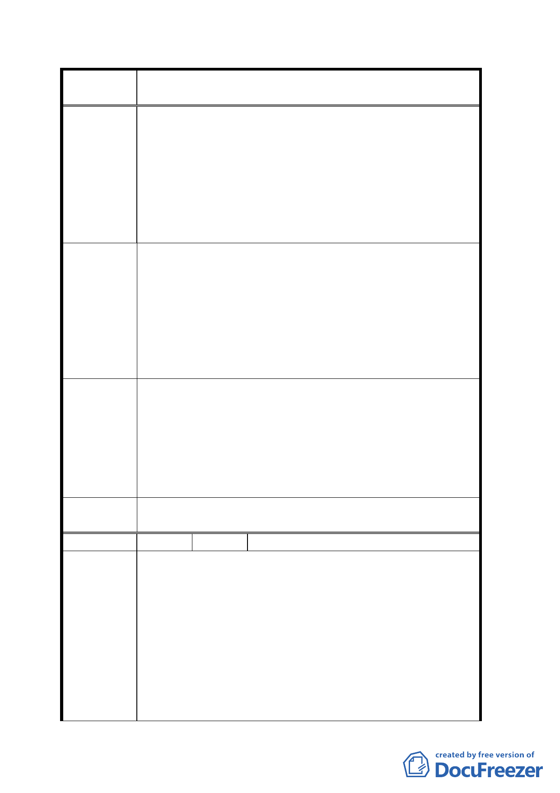

案
名
變更「修訂台北市主要計畫商業區（通盤檢討）計
畫案」內有關商業區變更回饋相關規定案
自然形成成衣批發市場加工區，民眾已將住宅變更為
商業（營業）使用，這是實際需要，而政府的都市計
畫係民國四十八年編定住宅區至今，房屋已老舊、龜
裂、漏水，急需更新，才能促進地方繁榮進步。
三、 從回饋面檢討：現有規定住三變更為商三特容積率不
變，住戶無法將現有房屋更新，本人等現有房屋係四
層樓房，如容積不變拆除重建也是四樓，還要回饋，
是都市更新的障礙。
一、 目前編定商三特之地段，大部分都在老舊社區，而且
已變更為商業使用之住三，政府應將容積率比照商
建議辦法
三，其增加容積，產生之受益，地主應繳回饋金可在
建築設計規範明訂，於申請使用執照核准，地主辦理
土地過戶繳納增值稅附帶一併開徵，如同工程受益費
方式開徵，因房屋出售地主才有錢繳回饋金。
二、 政府應鼓勵並且獎勵都市更新，才能繁榮地方，增加
稅收，政府與住戶皆受益才是量好的政策。
一、 本案係針對 84 年商業區檢討案內所劃設商業區回饋
條件之檢討，並未涉及該計畫分區變更及容積率調整
專案小組
審查結論
等議題。
二、 關於繳交回饋金之建議，非屬都市計畫討論範圍，請
執行單位參考。
三、 都市更新部分，可依都市更新條例及「臺北市都市更
新自治條例」相關規定辦理。
委員會議
決議
依專案小組審查結論辦理。
編 號 7 陳情人 臺北市建築開發商業同業公會
辦理本市都市計畫「變更『修訂臺北市主要計畫商業區（通
盤檢討）計畫案』內有關商業區變更回饋相關規定案」中，
針對商業區變更基本條件新訂第二條「基地新、增、改建
需達 1/2 商業使用其建蔽率始得依商業區規定辦理」及第五
陳情理由
條「基地新、改建需達 1/2 商業使用始得申請綜合設計放寬」
等規定，對商（特）基地而言，上揭規定之公平性及合理
性有待商榷：
一、 商業區基地區位不一，除合適地點規劃為大型百貨賣
場外，商業活動可及樓層有限，觀諸本市現有商業區
使用情形，商用樓板多僅及於地面鄰近樓層即為明
一五